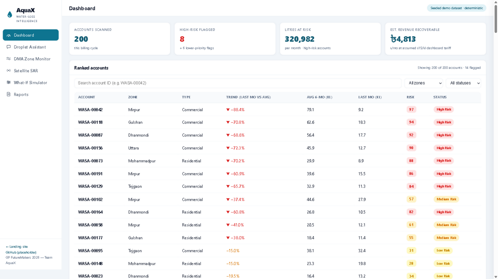

AI water-loss intelligence for utilities that cannot afford to lose a fifth of their water.
Across Bangladesh, utilities pump clean water into networks where it leaks out through broken pipes, illegal connections and faulty meters — unbilled, untraced, and unpaid.
AquaX starts with the data utilities already have today, then grows into the network and the sky.
Risk-scores every connection from its billing and consumption history: sudden unexplained drops, dormant meters, abnormal patterns. Each flag ships with a plain-language reason and a recommended field action.
Listens to district-metered-area flow and pressure streams. Night-flow analysis and pressure-drop signatures localise leaks to a zone before a customer ever complains.
Free radar imagery from ESA's Copernicus Sentinel-1 detects soil-moisture anomalies along buried mains — satellite-scale leak hunting with zero proprietary contract.
All three feed one dashboard that ranks by litres and revenue recoverable.
The Layer-1 engine is live in the demo: 200 scanned accounts, ranked flags with AI reasoning, the Droplet assistant, plus design prototypes for DMA monitoring, satellite SAR and a recovery simulator.

Students of Shahjalal University of Science & Technology, built for GP FutureMakers 2026 Round 2. Team AquaX — students of Shahjalal University of Science & Technology.